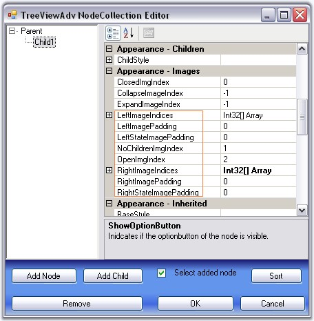
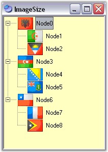
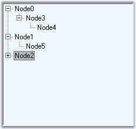
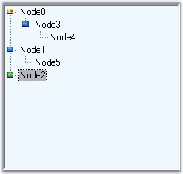
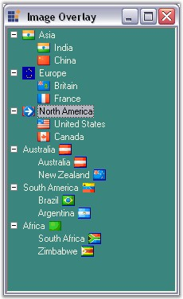
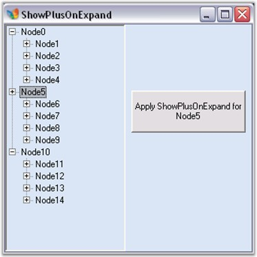

TreeViewAdv control can be customized with images for each of its actions for example collapse / expand state, plus / minus of the tree etc., This section discusses about the below topics.
· Left, Right and State Images
· Expand and Collapse Image
· Line Images
· Image Overlaying
· Plus Sign On ExpandMode
See Also
This section discusses about adding Left, Right and State images to the nodes and various image settings for the TreeViewAdv control.
Left/Right Images
The tree nodes can be set with left / right images using LeftImageList and RightImageList properties in the property window. Left / Right images for the individual nodes can be specified in LeftImageIndices and RightImageIndices properties of individual nodes, using the TreeViewAdv Nodes Collection Editor.
The nodes with the images can be given an enhanced appearance using LeftImagePadding and RightImagePadding.
|
TreeViewAdv Property |
Description |
|
LeftImageList |
Indicates the imagelist that holds the images to be drawn on the left of the Node. |
|
RightImageList |
This indicates the imagelist that holds the images to be drawn on the right of the Node. |
|
TreeNodeAdv Property |
Description |
|
LeftImageIndices |
It is the image index to be drawn on the left of the node's text. |
|
RightImageIndices |
It is the image index to be drawn on the right of the node's text. |
|
LeftImagePadding |
It is the space provided between the LeftImage of the node and node. |
|
RightImagePadding |
It is the space provided between the RightImage of the node and node. |

Figure 1121: Left, Right and State Image Properties in Node Collection Editor
Setting State Images
Different images can be set for expand / collapse states of the node, using StateImageList property. To apply the left open and close images, set the ClosedImgIndex and the OpenImgIndex to the indices that points to the images in the StateImageList respectively. Nodes without child can be set with a separate image using NoChildrenImageIndex.
|
TreeViewAdv Property |
Description |
|
ClosedImgIndex |
It is the StateImageList index value of the image that is displayed, when a tree node is collapsed. |
|
NoChildrenImgIndex |
It is the StateImageList index value of the image that is displayed, when a tree node has no children. |
|
NodeStateImageList |
Indicates the imagelist with images that are displayed instead of expand / collapse button. |
|
OpenImgIndex |
It is the StateImageList index value of the image that is displayed, when a tree node is expanded. |
|
StateImageList |
This indicates the imagelist that holds the images to be drawn based on the state of the Node. |
 Note: The above properties can also be set
for individual nodes.
Note: The above properties can also be set
for individual nodes.
|
TreeNodeAdv Property |
Description |
|
ClosedImageIndex |
It is the imageindex in StateImageList where the node is collapsed. |
|
NoChildrenImgIndex |
It is the imageindex indicating the image in the StateImageList where the node has no children. |
|
OpenImgIndex |
It is the imageindex in StateImageList where the node is expanded. |
|
LeftStateImagePadding |
It is the space provided between, the LeftStateImage of the node and node. |
|
RightStateImagePadding |
It is the space provided between, the RightStateImage of the node and node. |
Customizing the Image Size
The ImageSize property let you enhance the image size for a TreeNodeAdv. By default, the TreeViewAdv control displays the image size depending on the size of the image that is set in the image list.
|
[C#]
this.leftImageList.ImageSize = new System.Drawing.Size(16, 16); this.rightImageList.ImageSize = new System.Drawing.Size(16, 16); this.stateImageList.ImageSize = new System.Drawing.Size(16, 16); |
|
[VB.NET]
Me.leftImageList.ImageSize = New System.Drawing.Size(16, 16) Me.rightImageList.ImageSize = New System.Drawing.Size(16, 16) Me.stateImageList.ImageSize = New System.Drawing.Size(15, 15) |

Figure 1122: Image size customized in the TreeViewAdv
See Also
Line images, Expand and Collapse Image, Styles Architecture
When child nodes are added to a node, automatically the expand / collapse (+/-) images are set by default, to the parent node, which indicates whether the nodes are opened or closed. These default images can be replaced with custom images using NodeStateImageList property.
· Images to be displayed for the expanded and collapsed nodes can be specified in the DefaultExandImageIndex and DefaultCollapseImageIndex properties respectively.
· Images for individual nodes can be specified in treeNodeAdv.ExpandImageIndex / treeNodeAdv.CollapseImageIndex properties. Setting these properties will override the expand / collapse image settings that is applied for the control.
|
TreeViewAdv Property |
Description |
|
Expanded |
Indicates if the node is expanded. |
|
DefaultCollapseImageIndex |
It is the default imageindex when a tree node is collapsed. |
|
DefaultExpandImageIndex |
It is the default imageindex when a tree node is expanded. |
|
NodeStateImageList |
Indicates the imagelist with images that are displayed instead of expand / collapse button. |
These properties can be set at the node level using the below properties.
|
TreeNodeAdv Property |
Description |
|
CollapseImageIndex |
It is the imageindex for collapse button. |
|
ExpandImageIndex |
It is the imageindex for expand button. |

Figure 1123: Default Expand and Collapse (+ / -) Image for the Node

Figure 1124: Expand Collapse Images in TreeViewAdv with Node0 set with different Image
Note:
You can customize the background of the plusminus control. Click here to know more about
this.
See Also
TreeViewAdv control provides options to customize the lines which connects the nodes and also can hold custom images for expand / collapse operations. These properties are discussed in this section.
Line and Plus/Minus images
ShowRootLines when disabled, does not display the connecting lines for root items alone. That is, show lines will be displayed for rest of the items except for the level-1 items which will not be connected to one another with show lines.
ShowLines when disabled, does not display the connecting lines for the entire tree control. The hierarchical lines can be customized by setting the type of lines to be used and the color using the LineStyle and LineColor properties.
The standard +/- signs for the expand/collapse buttons in the TreeViewAdv can be replaced with custom images by setting the ImageList to the NodeStateImageList property of the TreeViewAdv. This is discussed here.
ShowPlusMinus when disabled, does not display the plus / minus images for the parent nodes, i.e., the expand/collapse images will not be displayed.
|
TreeViewAdv Property |
Description |
|
LineColor |
Indicates the color of the tree lines. |
|
LineStyle |
Indicates the line styles of the tree lines. |
|
ShowLines |
Indicates if the tree lines are visible. |
|
ShowPlusMinus |
Indicates if the plus or minus controls are visible for the tree. |
|
ShowRootLines |
Indicates whether lines are displayed between root nodes. |
|
[C#]
this.treeViewAdv1.LineColor = System.Drawing.Color.Black; this.treeViewAdv1.LineStyle = System.Drawing.Drawing2D.DashStyle.Dash; this.treeViewAdv1.ShowLines = true; this.treeViewAdv1.ShowPlusMinus = true; this.treeViewAdv1.ShowRootLines = true; |
|
[VB.NET]
Me.treeViewAdv1.LineColor = System.Drawing.Color.Black Me.treeViewAdv1.LineStyle = System.Drawing.Drawing2D.DashStyle.Dash Me.treeViewAdv1.ShowLines = True Me.treeViewAdv1.ShowPlusMinus = True Me.treeViewAdv1.ShowRootLines = True |
Note: ShowPlusMinus properties can also be
set for individual nodes.
|
TreeNodeAdv Property |
Description |
|
ShowPlusMinus |
Indicates if the plus or minus of the node is visible. |
The steps below will show how you could draw overlay images on the images associated with the tree nodes.
· Set the TreeViewAdv's OwnerDrawNodes property to true.
· Handle the TreeViewAdv's AfterNodePaint event as shown in code below to perform overlaying of images. The below code snippet shows overlaying LeftImages. The same code snippet can be used for overlaying RightImages and StateImages also by replacing LeftImagesX with RightImagesX and StateImagesX respectively.
|
[C#]
private void treeViewAdv1_AfterNodePaint(object sender, Syncfusion.Windows.Forms.Tools.TreeNodeAdvPaintEventArgs e) { // Suppose you wish to draw an overlay image on the image associated with the selected node. TreeNodeAdv node = this.treeViewAdv1.SelectedNode; // Get the position of the node's image. Point point = new Point(node.LeftImagesX, node.TextAndImageBounds.Y); // Perform image drawing. e.Graphics.DrawImage(overlayImage, point); } |
|
[VB.NET]
Private Sub treeViewAdv1_AfterNodePaint(sender As Object, e As Syncfusion.Windows.Forms.Tools.TreeNodeAdvPaintEventArgs) Handles treeViewAdv1.AfterNodePaint ' Suppose you wish to draw an overlay image on the image associated with the selected node. Dim node As TreeNodeAdv = Me.treeViewAdv1.SelectedNode ' Get the position of the node's image. Dim point As New Point(node.LeftImagesX, node.TextAndImageBounds.Y) ' Perform image drawing. e.Graphics.DrawImage(overlayImage, point) End Sub |

Figure 1125: Overlaying Images in the TreeViewAdv
A sample demonstrating this feature is available in the below sample installation location.
..\My Documents\Syncfusion\EssentialStudio\Version Number\Windows\Tools.Windows\Samples\2.0\Tree Package\ TreeViewAdvImageOverLayingDemo
The nodes in the tree view, even when it is in the expanded state, can still display the PLUS (+) sign using the ShowPlusOnExpand property.
LoadOnDemand property should be set to true for this feature to be effected.
The BeforeExpand event will be raised when the plus is clicked again and when in expanded mode so that you can check the datasource for changes.
|
TreeNodeAdv Property |
Description |
|
ShowPlusOnExpand |
Indicates if the plus minus of the node is visible. |
This will effect only if the LoadOnDemand property is set to true.
|
[C#]
this.treeViewAdv1.LoadOnDemand = true; private void button1_Click(object sender, System.EventArgs e) { TreeNodeAdv node=this.treeViewAdv1.Nodes[2]; // Setting ShowPlusOnExpand to true for the selected node. node.ShowPlusOnExpand=true; this.treeViewAdv1.SelectedNode=this.treeViewAdv1.Nodes[2]; } |
|
[VB.NET]
Me.treeViewAdv1.LoadOnDemand = True Private Sub button1_Click(ByVal sender As Object, ByVal e As System.EventArgs) Dim node As TreeNodeAdv=Me.treeViewAdv1.Nodes(2) ' Setting ShowPlusOnExpand to true for the selected node. node.ShowPlusOnExpand=True Me.treeViewAdv1.SelectedNode=Me.treeViewAdv1.Nodes(2) End Sub |
Given below is a screen shot of this.

Figure 1126: ShowPlusOnExpand property set to True